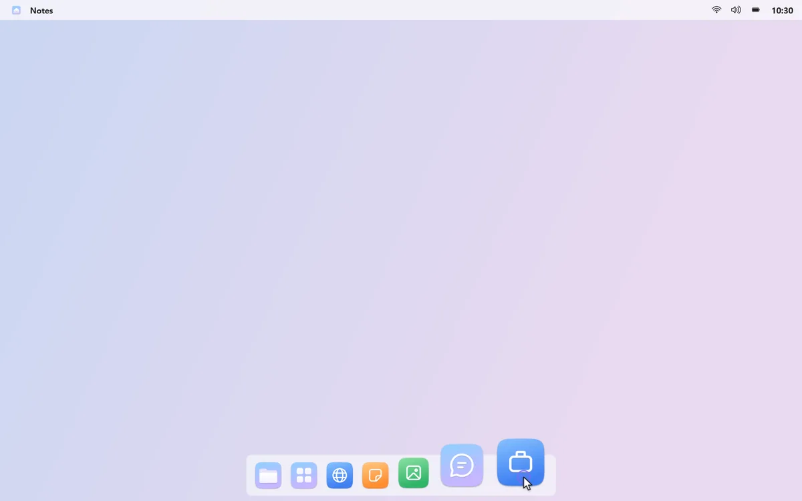
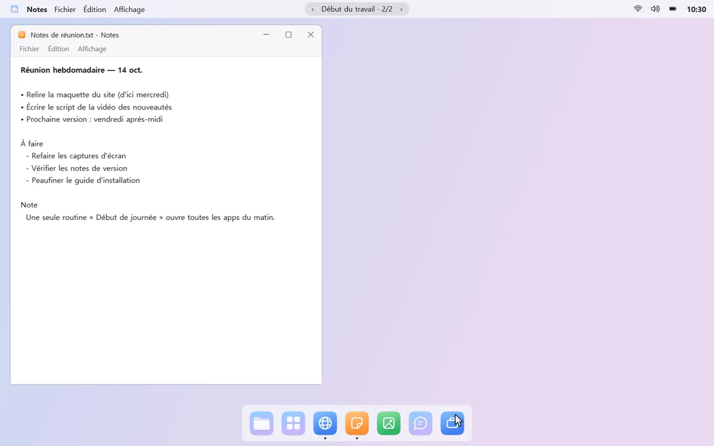
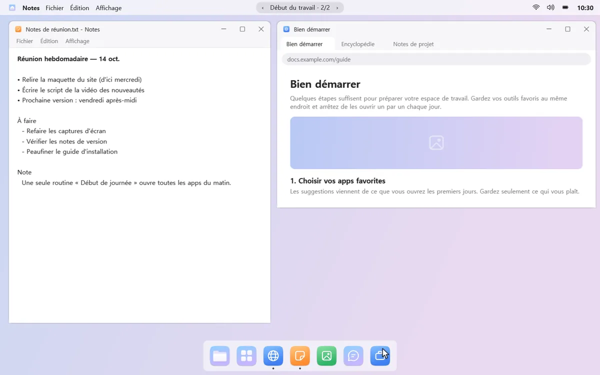
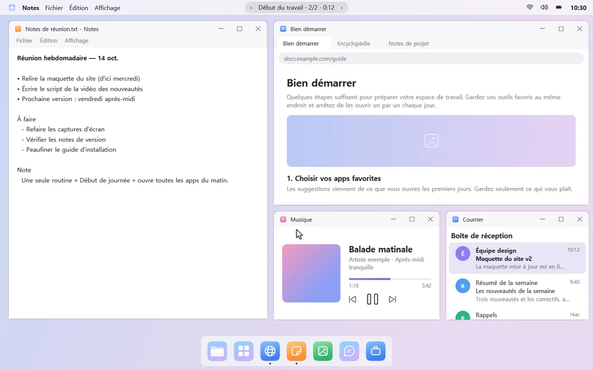
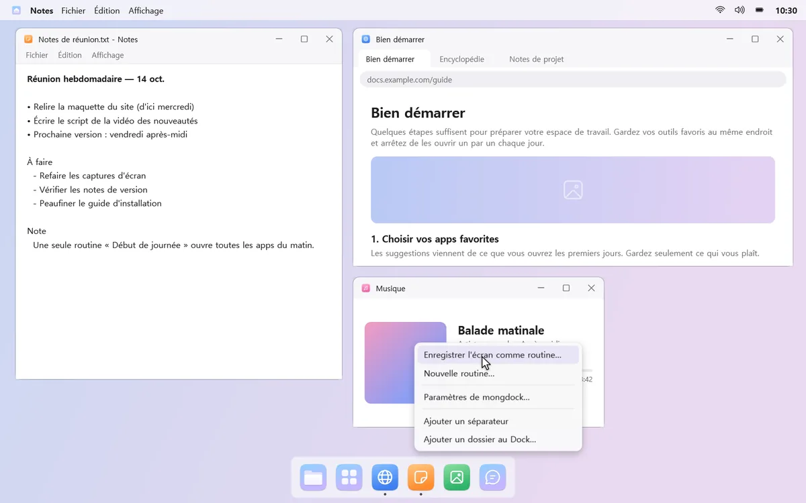
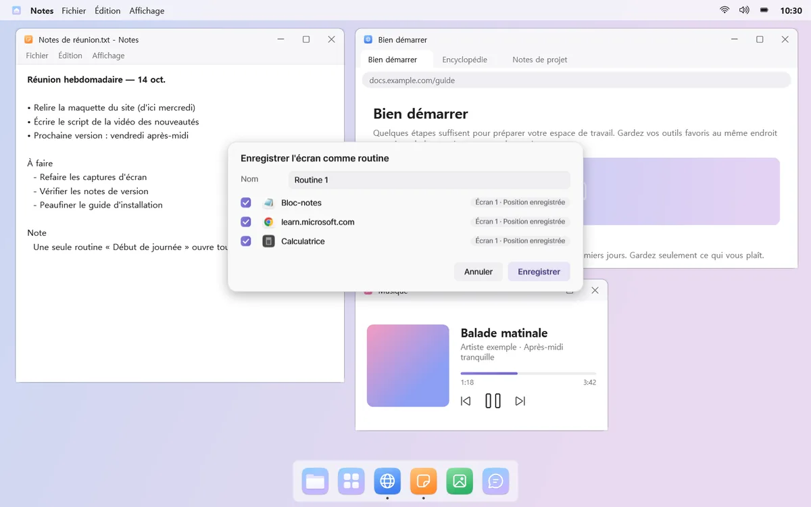
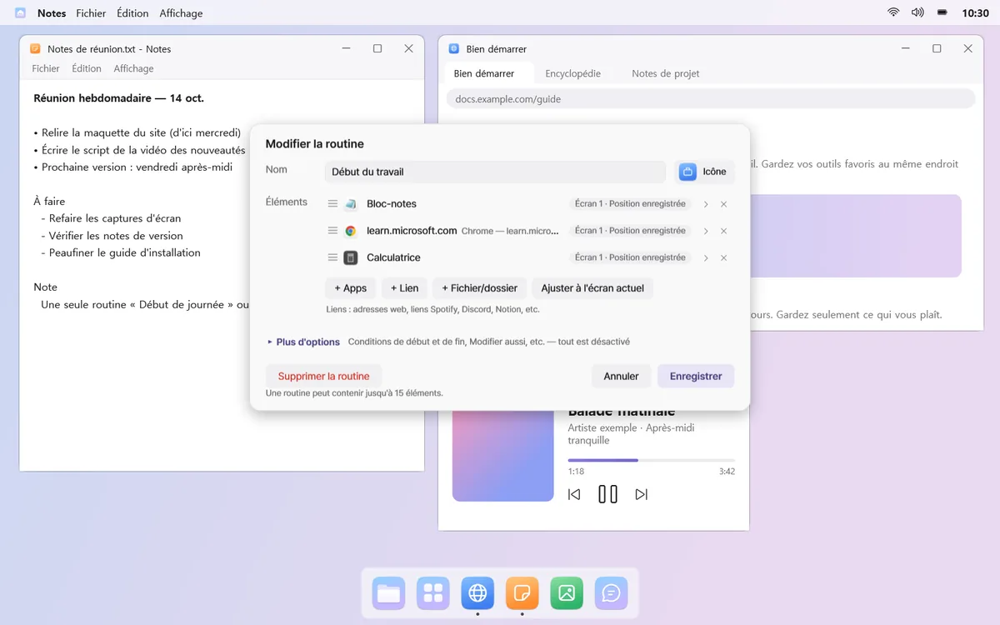
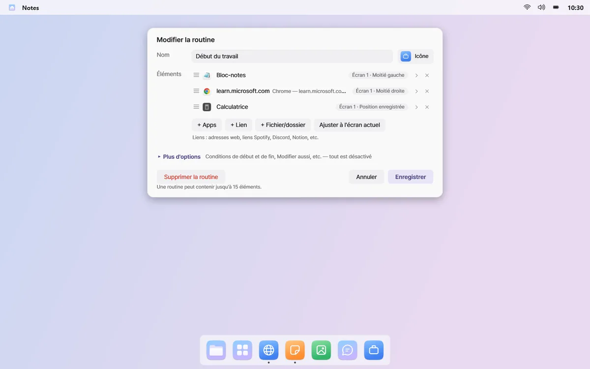
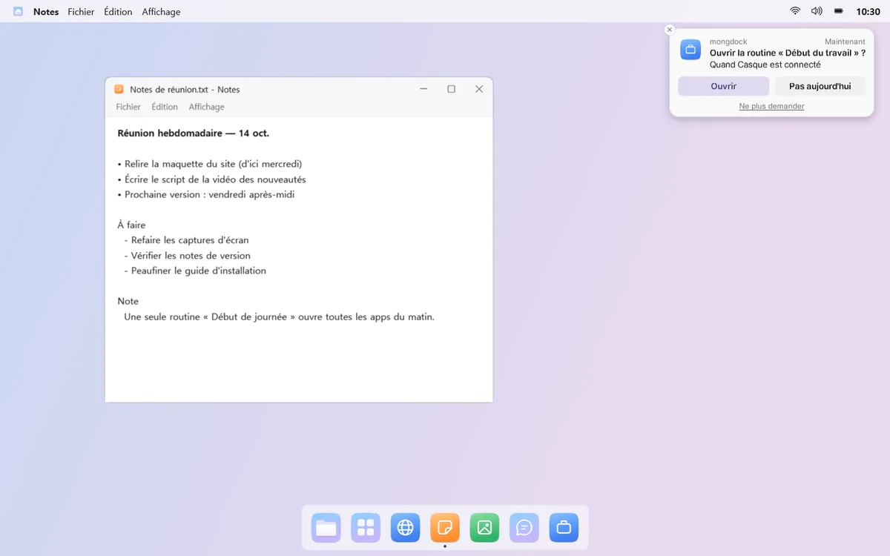
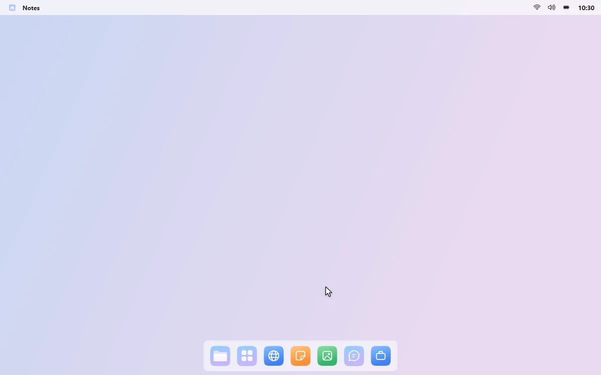

Ouvrez vos apps du quotidien d'un coup
Regroupez les apps, liens et jeux que vous utilisez ensemble dans une routine. Un clic, et ils s'ouvrent sur un nouveau bureau, chacun à sa place. Terminez-la, et seules ces fenêtres se ferment.
Par exemple, cliquez sur « Début du travail » : votre mail, votre navigateur et vos documents s'ouvrent sur les écrans et aux places choisis.
Tout s'ouvre à sa place
Cliquez sur une routine : un nouveau bureau virtuel s'ouvre, avec chaque app sur l'écran et à la place que vous avez choisis, en plein écran ou sur la moitié gauche. La barre des menus affiche le nom de la routine, et peut aussi indiquer depuis combien de temps vous y êtes.





Enregistrez l'écran tel quel
Disposez vos fenêtres comme vous le souhaitez, puis choisissez « Enregistrer l'écran comme routine… ». C'est tout. mongdock peut aussi repérer les apps que vous ouvrez souvent ensemble et vous suggérer une routine.




Apps, liens et jeux
Mélangez dans une routine des apps, des liens qui ouvrent plusieurs onglets, et des fichiers ou dossiers. Ajoutez aussi des jeux et lanceurs Steam, Epic ou GOG : ils démarrent dès l'ouverture de la routine.

Elle demande au bon moment
Branchez un casque ou un écran, allumez votre PC, atteignez un jour et une heure choisis, ou lancez une app précise, et mongdock vous demande : « Ouvrir ? ». Au plus une fois par jour pour chaque condition. Par défaut, les routines ne s'ouvrent que lorsque vous cliquez.

Terminer, tout aussi proprement
« Terminer la routine » ferme uniquement les fenêtres ouvertes par la routine et ne touche à rien d'autre. Si la routine a changé votre sortie audio, le volume, Ne pas déranger ou le masquage automatique du Dock, la terminer les rétablit.

Les conditions de début et de fin et les autres options se trouvent sous « Plus d'options » dans l'éditeur, toutes désactivées par défaut.
Bon à savoir
- Les apps à fenêtre unique (comme Discord) ne sont pas rouvertes si elles tournent déjà. mongdock vous indique sur quel bureau elles se trouvent.
- Les fenêtres qui demandent s'il faut enregistrer restent ouvertes quand vous terminez une routine.
- Si mongdock redémarre après l'ouverture d'une routine, il ne sait plus quelles fenêtres la routine a ouvertes : vous devrez les fermer vous-même.